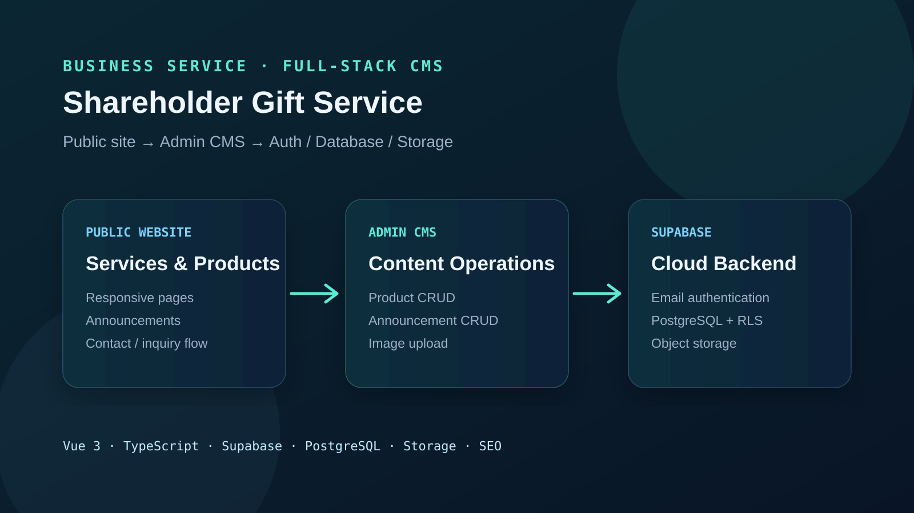

01 / Product scope
不只做首頁，也做可自行維護內容的後台。
2主要內容管理流程：公告與商品
3Supabase 能力：Auth、Database、Storage
9README 記載的 Schema.org 結構化資料類型
CI/CD以 GitHub Actions 管理部署流程
02 / Architecture
公開網站與管理後台共用雲端資料層。
Vue 3 UI服務、方案、商品、公告與聯絡流程
Admin CMS登入後新增、編輯、刪除與上下架內容
SupabaseEmail Auth、PostgreSQL 與 Row Level Security
Storage商品圖片與內容資產的雲端儲存

03 / Public website
04 / Admin operations
把日常內容更新從改程式碼變成後台操作。
- 管理員以 Supabase Email / Password Authentication 登入。
- 公告可新增、編輯、刪除並設定類型與標籤。
- 商品可新增、編輯、設定價格與分類，並切換上架／下架。
- 圖片可上傳到 Supabase Storage，內容資料保存至 PostgreSQL。
- 資料層使用 Row Level Security 作為權限邊界的一部分。
05 / Engineering choices
06 / Takeaway
商業網站的重點，是交付後仍能被營運。
這個專案把前台展示、內容管理、身份驗證、資料庫、圖片儲存與 SEO 串在一起。相較只做靜態形象頁，核心差異是管理者可以持續更新內容，不需要每次都修改程式碼。